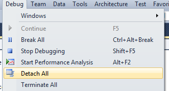
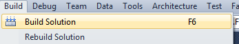
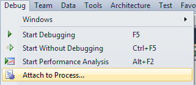
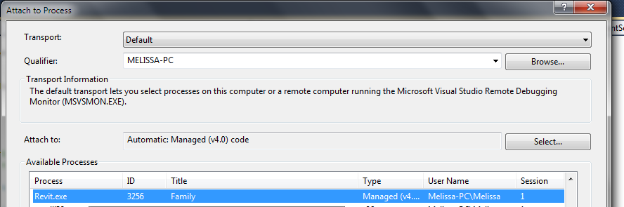
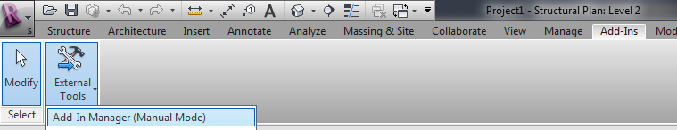
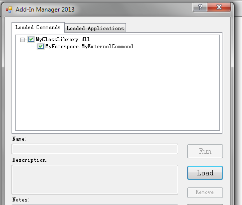
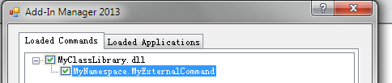

Reload Add-in for Debug Without Restart
We explored and learned a lot of interesting areas during the DevLab at AU on Tuesday last week.
One recurring theme is how to effectively debug an add-in without having to restart Revit and reload the entire model each time a change is made to the source code.
A long, long time back, right in the beginning of the Revit .NET API, it was briefly possible to use the Visual Studio Edit and Continue feature for that. That was obviously an absolutely perfect solution. Alas, those times are past, and unlikely to return. I almost find it hard to believe I am not imagining things.
There are in fact several other known solutions to this problem, which I would classify as follows:
- Stupid: set up the Revit project and Visual Studio debug settings to bring you to the exact required debugging position and context in one F5 'start debugging' click. Every time a code modification is required, simply stop debugging, modify the code, recompile and restart Revit. That is the approach I use myself, since I can get by working in absolutely minimal test models.
- Cool: use an interactive scripting language such as Python or Ruby. In fact, the wish be able to modify the API code interactively without requiring the tedious recompile and reload cycle was one of the main motivating factors in implementing the latter. The use of this functionality is obviously just a side effect of the much larger main advantage of being able to play interactively with the code in complete freedom, since it is interpreted on the fly and no compilation at all is required.
- Effective and laborious: convert the code to be debugged to a macro and use the built-in SharpDevelop IDE. This means that you convert the part of your add-in that your are debugging and modifying to a macro. The rest can be left as a compiled DLL. The two components can communicate with each other. When finished debugging, you move the code out of the macro environment into the external DLL again.
- Efficient: use the AddInManager and attach to process to reload repeatedly, with compile and edit cycles.
I already described all three of the solutions not involving Python and Ruby in an earlier discussion on debugging an add-in without restarting Revit.
Melissa Manalac of S-frame was making such efficient use of the AddInManager approach at the DevLab that I asked her to document it for you once again.
She points out that James LeVieux already summarized the process in his comment on that discussion:
Here are the required steps:
- Start Revit 2013.
- Before coding, make sure all processes are detached.
- After coding, rebuild your solution and attach to the Revit process.
- In Revit, go to the Add-Ins tab > Add-In Manager and reload the desired add-in DLL.
- Run desired external command.
- Repeat steps 2 to 5.
You also need to be aware that the AddInManager requires the external commands it loads to use manual transaction mode. This is no significant restriction, since automatic transaction mode is not recommended anyway.
Here are some screen snapshots to further clarify these steps:
1. Start Revit 2013.
2. Before coding, make sure all processes are detached:

3. After coding, rebuild the add-in solution and attach to Revit process.
Rebuild solution:

Attach to process:

Select the Revit.exe process:

4. In Revit, go to the Add-Ins tab > Add-In Manager and reload the desired add-in DLL.
Launch the Add-in Manager:

Load the add-in DLL:

5. Run the desired external command:

6. Repeat steps 2 to 5 as desired.
Many thanks to Melissa for the detailed up-to-date description!
Source Code Coloriser
As I mentioned quite a while back, I use the Visual Studio CopyToHtml plug-in to copy and paste colour coded C# and VB source code to HTML for my blog posts.
Harri Mattison of Boost Your BIM now pointed out that this utility obviously cannot be used in the built-in Revit SharpDevelop macro environment.
He found this online C# code coloriser tool by Pavel Vladov that is quite nice and can be used instead.
Oh, and I found another one myself, tohtml.com, that supports a huge number of different languages besides C#. Unfortunately, it does not escape all the HTML characters, e.g. '<' remains '<' instead of being converted to '<'.